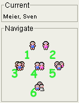

GenJ bietet verschiedene Wege zur Navigation durch Ihre genealogischen Daten. Sie können Personen oder Familien in der Baum-Ansicht bzw. Objekte in der Tabellen-Ansicht auswählen sowie durch die Eigenschaften in der Editier-Ansicht blättern und direkt zu einem dort referenzierten Objekt springen. Die Navigator-Ansicht erlaubt Ihnen Beziehungen von Personen umfassend zu verfolgen – die Darstellung in anderen Ansichten wird angepasst und zeigt die Person, die Sie gerade angesteuert haben.
Folgendes Bild zeigt die Auswahl, welche die Navigator-Ansicht in Form ihrer
sechs Schaltflächen anbietet. Oben ist der Name der gerade ausgewählten Person angezeigt. Die Auswahlknöpfe darunter sind entsprechend ihrer Funktion angeordnet (aus einer hierarchischen Perspektive).

Diese Ansicht bietet keine Werkzeugleiste an.
Diese Ansicht bietet keine Einstellungsoptionen an.